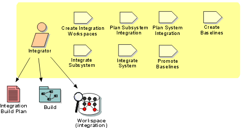

Role:
Integrator
Implementers deliver their tested components into an integration
workspace, whereas integrators combine them to produce a build. An integrator
is also responsible for planning the integration, which takes place at the subsystem
and system levels, with each having a separate integration workspace. Tested
components are delivered from an implementer's private development workspace
into a subsystem integration workspace, whereas integrated implementation subsystems
are delivered from the subsystem integration workspace into the system integration
workspace.

Staffing
It may sometimes be appropriate for an individual acting as an integrator to
also act as a Role: Tester. For example, if the
project is small or the integration is at the subsystem level, it may be an
effective use of resources to have the integrator and tester be the same team
member. Indeed, for subsystem-level integration and test, a single individual
might play the role of implementer, integrator, and tester. At the system level,
however, we recommend that integration and testing are performed by an
independent team.
Copyright
© 1987 - 2001 Rational Software Corporation
| |

|
 Roles and Activities >
Roles and Activities >
 Integrator
Integrator